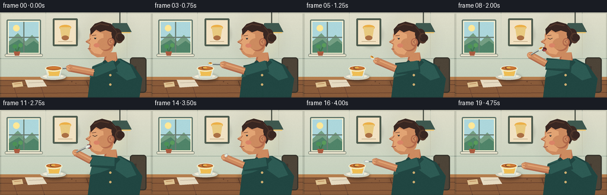
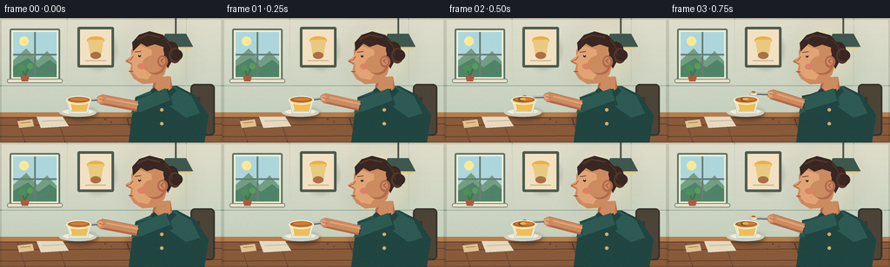

CODING AGENTS AS PIXEL WORLD MODELS
traex/GPT-5.6-Sol · motion_rationality_0028
点击播放 · 原生 RGB 像素
逐轮保存的候选
回放视频、检查图与代码变化。
每份候选均可单独播放。实际图片检查记录在下方工具轨迹中。
候选 01播放与检查图
点击播放 · 原生 RGB 像素

展开代码变化
--- 上一保存版本
+++ 本次保存版本
@@ -0,0 +1,333 @@
+from pathlib import Path
+import math
+import numpy as np
+from PIL import Image, ImageDraw, ImageFilter
+import artifact_io
+
+# Procedural, antialiased 2-D animation. Everything is drawn from geometry.
+W, H, N, FPS = 256, 144, 20, 4
+S = 4
+ROOT = Path(__file__).resolve().parent
+rng = np.random.default_rng(28)
+
+
+def sc(v):
+ return int(round(v * S))
+
+
+def box(x0, y0, x1, y1):
+ return (sc(x0), sc(y0), sc(x1), sc(y1))
+
+
+def pts(seq):
+ return [(sc(x), sc(y)) for x, y in seq]
+
+
+def ellipse(d, xy, fill, outline=None, width=1):
+ d.ellipse(box(*xy), fill=fill, outline=outline, width=sc(width) if outline else 1)
+
+
+def rectangle(d, xy, fill, outline=None, width=1, radius=0):
+ if radius:
+ d.rounded_rectangle(box(*xy), radius=sc(radius), fill=fill, outline=outline,
+ width=sc(width) if outline else 1)
+ else:
+ d.rectangle(box(*xy), fill=fill, outline=outline,
+ width=sc(width) if outline else 1)
+
+
+def polygon(d, p, fill):
+ d.polygon(pts(p), fill=fill)
+
+
+def line(d, p, fill, width=1, joint='curve'):
+ d.line(pts(p), fill=fill, width=sc(width), joint=joint)
+
+
+def poly_ellipse(d, cx, cy, length, width, angle, fill, n=20):
+ ca, sa = math.cos(angle), math.sin(angle)
+ p = []
+ for i in range(n):
+ a = 2 * math.pi * i / n
+ xx, yy = (length/2)*math.cos(a), (width/2)*math.sin(a)
+ p.append((cx + xx*ca - yy*sa, cy + xx*sa + yy*ca))
+ polygon(d, p, fill)
+
+
+def mix(a, b, t):
+ return a + (b-a)*t
+
+
+def ease(t):
+ return t*t*(3-2*t)
+
+
+def track(keys, frame):
+ """Smooth interpolation between (frame, (x,y)) keys."""
+ if frame <= keys[0][0]: return keys[0][1]
+ if frame >= keys[-1][0]: return keys[-1][1]
+ for (f0, a), (f1, b) in zip(keys, keys[1:]):
+ if f0 <= frame <= f1:
+ q = ease((frame-f0)/(f1-f0))
+ return (mix(a[0], b[0], q), mix(a[1], b[1], q))
+
+
+def shadow_ellipse(im, xy, color=(27, 20, 16, 70), blur=3):
+ lay = Image.new('RGBA', im.size, (0,0,0,0)); ld = ImageDraw.Draw(lay)
+ ld.ellipse(box(*xy), fill=color)
+ lay = lay.filter(ImageFilter.GaussianBlur(sc(blur)))
+ im.alpha_composite(lay)
+
+
+def base_scene():
+ # Subtle warm wall gradient
+ yy = np.linspace(0, 1, H*S)[:, None, None]
+ top = np.array([224, 222, 203], dtype=float)
+ bot = np.array([190, 205, 187], dtype=float)
+ arr = top[None,None,:]*(1-yy) + bot[None,None,:]*yy
+ arr = np.repeat(arr, W*S, axis=1).astype(np.uint8)
+ im = Image.fromarray(arr, 'RGB').convert('RGBA')
+ d = ImageDraw.Draw(im)
+
+ # panel seams and soft wall trim
+ line(d, [(0,78),(256,78)], (157,175,159,110), 1)
+ for x in (77, 214): line(d, [(x,0),(x,78)], (207,211,193,100), 1)
+
+ # Sunny little window with landscape
+ rectangle(d, (11,12,69,72), (244,239,210), (94,116,105), 2, 2)
+ rectangle(d, (15,16,65,68), (173,215,220))
+ polygon(d, [(15,49),(30,35),(43,49),(54,38),(65,50),(65,68),(15,68)], (116,158,130))
+ polygon(d, [(15,56),(32,46),(44,57),(57,48),(65,54),(65,68),(15,68)], (80,132,105))
+ ellipse(d, (22,21,33,32), (255,232,151))
+ line(d, [(40,16),(40,68)], (106,126,114), 2)
+ line(d, [(15,42),(65,42)], (106,126,114), 2)
+ # sill with tiny pot
+ rectangle(d, (8,70,72,75), (232,226,204), (126,137,122), 1, 2)
+ polygon(d, [(23,66),(34,66),(32,73),(25,73)], (170,92,65))
+ line(d, [(28,66),(25,57)], (62,119,75), 2)
+ line(d, [(29,66),(34,55)], (62,119,75), 2)
+ ellipse(d, (21,54,29,61), (76,146,87)); ellipse(d, (31,52,38,59), (89,156,91))
+
+ # framed pudding-themed abstract print
+ shadow_ellipse(im, (92,14,134,60), (40,40,30,35), 2)
+ d = ImageDraw.Draw(im)
+ rectangle(d, (89,10,131,57), (77,91,78), None, radius=2)
+ rectangle(d, (92,13,128,54), (242,226,195))
+ ellipse(d, (100,21,120,30), (236,176,72))
+ polygon(d, [(101,25),(119,25),(116,44),(104,44)], (233,202,128))
+ ellipse(d, (104,39,116,47), (171,112,69))
+ line(d, [(98,49),(122,49)], (194,171,134), 1)
+
+ # hanging lamp glow and shade
+ glow = Image.new('RGBA', im.size, (0,0,0,0)); gd = ImageDraw.Draw(glow)
+ gd.ellipse(box(144,2,219,89), fill=(255,220,135,25))
+ glow = glow.filter(ImageFilter.GaussianBlur(sc(10))); im.alpha_composite(glow)
+ d = ImageDraw.Draw(im)
+ line(d, [(202,0),(202,18)], (77,82,72), 2)
+ polygon(d, [(190,18),(214,18),(222,33),(182,33)], (62,88,79))
+ line(d, [(184,34),(220,34)], (238,198,111), 2)
+
+ # table and its edge
+ rectangle(d, (0,109,256,144), (137,91,58))
+ rectangle(d, (0,109,256,114), (180,126,78))
+ line(d, [(0,115),(256,115)], (101,66,48), 1)
+ for y, alpha in [(124,45),(137,35)]:
+ line(d, [(0,y),(256,y-2)], (92,57,42,alpha), 1)
+ for x in (20,66,146,226):
+ line(d, [(x,116),(x+9,144)], (112,72,52,45), 1)
+
+ # folded napkin and tiny spoon-rest shadow
+ polygon(d, [(42,114),(72,114),(79,125),(47,127)], (230,218,193))
+ line(d, [(48,119),(74,118)], (190,176,153), 1)
+ return im
+
+
+spoon_keys = [
+ (0,(88,96)), (1,(87,96)), (2,(91,92)), (4,(106,83)),
+ (6,(125,71)), (8,(144,62)), (9,(149,61.5)), (11,(148,62)),
+ (12,(140,67)), (14,(125,77)), (16,(106,87)), (18,(92,95)), (19,(88,97))]
+hand_keys = [
+ (0,(116,94)), (2,(118,91)), (4,(121,85)), (6,(124,78)),
+ (8,(126,72)), (11,(127,72)), (12,(126,74)), (14,(122,80)),
+ (16,(120,87)), (18,(117,93)), (19,(116,94))]
+elbow_keys = [
+ (0,(158,102)), (2,(157,101)), (4,(156,98)), (6,(155,93)),
+ (8,(153,87)), (11,(153,86)), (12,(154,89)), (14,(155,94)),
+ (16,(157,99)), (19,(158,102))]
+
+
+def draw_person(im, frame):
+ d = ImageDraw.Draw(im)
+ # Tiny natural breathing/head settling
+ bob = 0.55*math.sin((frame/19)*2*math.pi)
+ hx, hy = 0, bob
+ skin = (205,139,96,255); skin_light=(226,164,116,255); skin_shadow=(178,106,76,255)
+ shirt=(45,91,84,255); shirt_dark=(33,70,66,255); hair=(57,39,34,255); hair_hi=(82,55,43,255)
+
+ # Chair behind figure
+ rectangle(d, (219,76,247,136), (77,68,56), (54,52,44), 2, 5)
+ line(d, [(228,91),(228,142)], (62,55,48), 4)
+
+ # Torso, collar, neck
+ polygon(d, [(176,80+hy),(203,78+hy),(224,89),(240,112),(235,144),(148,144),(152,111)], shirt_dark)
+ polygon(d, [(178,82+hy),(201,79+hy),(220,90),(230,110),(214,115),(190,98),(169,106),(151,110),(156,91)], shirt)
+ polygon(d, [(178,68+hy),(196,67+hy),(199,86+hy),(187,92+hy),(175,82+hy)], skin_shadow)
+ polygon(d, [(181,68+hy),(196,67+hy),(196,83+hy),(187,88+hy),(178,81+hy)], skin)
+ # neckline
+ polygon(d, [(177,80+hy),(187,89+hy),(199,80+hy),(203,84+hy),(189,98+hy),(173,85+hy)], shirt_dark)
+ line(d, [(187,90+hy),(187,142)], (30,69,64), 1)
+ ellipse(d, (184,104,188,108), (205,173,112))
+ ellipse(d, (184,120,188,124), (205,173,112))
+
+ # Head / profile facing left
+ face = [(185,21+hy),(169,19+hy),(157,26+hy),(151,37+hy),(151,44+hy),
+ (144,49+hy),(151,54+hy),(149,62+hy),(154,70+hy),(164,76+hy),
+ (178,75+hy),(189,65+hy),(194,49+hy),(193,32+hy)]
+ polygon(d, face, skin)
+ # Face highlight / cheek plane
+ polygon(d, [(158,31+hy),(150,45+hy),(146,49+hy),(153,53+hy),(152,62+hy),
+ (159,69+hy),(170,71+hy),(176,62+hy),(174,36+hy)], skin_light)
+ ellipse(d, (167,45+hy,190,65+hy), skin_shadow)
+ ellipse(d, (164,43+hy,188,63+hy), skin)
+
+ # Hair cap and bun/ponytail
+ polygon(d, [(153,38+hy),(152,28+hy),(160,19+hy),(172,15+hy),(187,19+hy),
+ (198,31+hy),(199,47+hy),(193,58+hy),(188,48+hy),(190,34+hy),
+ (178,30+hy),(169,33+hy),(162,29+hy)], hair)
+ ellipse(d, (188,27+hy,205,45+hy), hair)
+ ellipse(d, (194,34+hy,208,52+hy), hair_hi)
+ ellipse(d, (196,36+hy,210,49+hy), hair)
+ line(d, [(158,24+hy),(169,19+hy),(184,22+hy)], hair_hi, 2)
+ line(d, [(189,24+hy),(196,32+hy),(198,43+hy)], hair_hi, 1)
+
+ # Ear with inner detail
+ ellipse(d, (181,43+hy,193,57+hy), skin_shadow)
+ ellipse(d, (183,45+hy,190,54+hy), skin)
+ line(d, [(188,47+hy),(185,49+hy),(188,52+hy)], (150,87,69), 1)
+
+ # Eye and brow; contented blink at bite
+ line(d, [(155,39+hy),(162,38+hy)], (96,57,45), 1)
+ if 8 <= frame <= 11:
+ line(d, [(156,43+hy),(160,45+hy),(164,43+hy)], (60,48,41), 1)
+ else:
+ ellipse(d, (159,42+hy,162,45+hy), (47,43,37))
+ ellipse(d, (160,42+hy,161,43+hy), (245,238,220))
+ # Nose contour
+ line(d, [(153,44+hy),(150,48+hy),(145,50+hy),(151,52+hy)], (168,96,70), 1)
+ # cheek blush
+ ellipse(d, (158,52+hy,168,59+hy), (218,132,103,100))
+
+ # Mouth changes logically as spoon approaches/enters
+ if 8 <= frame <= 11:
+ ellipse(d, (146,58.5+hy,154,65.5+hy), (83,38,35))
+ ellipse(d, (148,62+hy,153,65+hy), (180,74,74))
+ line(d, [(147,58.8+hy),(153,59.5+hy)], (143,64,61), 1)
+ elif frame >= 12:
+ line(d, [(148,62+hy),(152,63+hy),(156,61.5+hy)], (132,59,58), 1)
+ else:
+ line(d, [(148,61+hy),(153,61.5+hy)], (130,60,57), 1)
+
+ # Moving arm: upper arm in sleeve, then bare forearm, hand and spoon.
+ hand = track(hand_keys, frame); elbow = track(elbow_keys, frame)
+ shoulder = (196,91+hy)
+ # shoulder fabric shadow and arm
+ line(d, [shoulder, elbow], shirt_dark, 20)
+ line(d, [(193,88+hy), elbow], shirt, 15)
+ # sleeve cuff
+ vx, vy = hand[0]-elbow[0], hand[1]-elbow[1]
+ vl = max(1, math.hypot(vx,vy)); nx, ny = -vy/vl, vx/vl
+ line(d, [(elbow[0]-nx*5,elbow[1]-ny*5),(elbow[0]+nx*5,elbow[1]+ny*5)], (28,65,61), 2)
+ # forearm has shadow under and highlight atop
+ line(d, [elbow, hand], skin_shadow, 12)
+ line(d, [(elbow[0],elbow[1]-1),(hand[0],hand[1]-1)], skin, 9)
+ line(d, [(elbow[0]+1,elbow[1]-2),(hand[0],hand[1]-2)], skin_light, 2)
+ ellipse(d, (hand[0]-5,hand[1]-5,hand[0]+6,hand[1]+5), skin)
+
+ # spoon handle from curled fingers to its bowl
+ tip = track(spoon_keys, frame)
+ ang = math.atan2(tip[1]-hand[1], tip[0]-hand[0])
+ line(d, [hand, tip], (104,111,109), 3)
+ line(d, [(hand[0],hand[1]-0.7),(tip[0],tip[1]-0.7)], (228,232,222), 1)
+ poly_ellipse(d, tip[0], tip[1], 9, 5, ang, (188,196,192))
+ poly_ellipse(d, tip[0]-0.5*math.cos(ang), tip[1]-0.5*math.sin(ang), 6.5, 2.7, ang, (238,239,224))
+
+ # pudding carried on spoon until the bite
+ if 2 <= frame <= 8:
+ offset_y = -1.6
+ poly_ellipse(d, tip[0], tip[1]+offset_y, 6.5, 3.4, ang, (242,190,80))
+ poly_ellipse(d, tip[0]+0.4, tip[1]-2.2, 4.3, 1.4, ang, (166,92,48))
+
+ # Fingers visibly curled around handle (drawn last)
+ ellipse(d, (hand[0]-4, hand[1]-3, hand[0]+2, hand[1]+3), skin_light)
+ line(d, [(hand[0]-2,hand[1]-1),(hand[0]+3,hand[1]+1)], skin_shadow, 1)
+
+
+def draw_pudding(im, frame):
+ d = ImageDraw.Draw(im)
+ # table contact shadow
+ shadow_ellipse(im, (73,104,112,118), (34,25,20,90), 2)
+ d = ImageDraw.Draw(im)
+ # saucer
+ ellipse(d, (68,104,111,114), (208,209,193))
+ ellipse(d, (73,105,107,111), (239,235,215))
+ # glass cup, caramel pudding visible through it
+ polygon(d, [(77,94),(104,94),(101,108),(81,108)], (224,205,158))
+ polygon(d, [(81,98),(101,98),(99,107),(83,107)], (239,190,84))
+ polygon(d, [(77,96),(81,108),(99,108),(104,96),(101,111),(80,111)], (202,213,202,170))
+ line(d, [(78,97),(81,109),(100,109),(103,97)], (246,248,233), 1)
+ # top and caramel cap
+ ellipse(d, (76,90,105,100), (240,218,145))
+ ellipse(d, (78,91,103,97.5), (181,99,47))
+ ellipse(d, (81,92,101,95.5), (210,126,53))
+ # scoop groove develops after lift
+ if frame >= 2:
+ ellipse(d, (84,91.5,92,96), (132,73,42))
+ ellipse(d, (86,92,93,95), (231,176,77))
+ # rim and glass sparkle
+ ellipse(d, (76,90,105,100), None, (245,246,226), 1)
+ line(d, [(80,98),(82,106)], (255,255,239), 1)
+ # Little plate glint
+ line(d, [(72,108),(78,110)], (255,252,235), 1)
+
+
+def draw_foreground(im, frame):
+ d = ImageDraw.Draw(im)
+ # sugar packet and a few crumbs add tactile detail
+ polygon(d, [(20,119),(37,117),(39,125),(22,127)], (222,194,145))
+ line(d, [(24,121),(35,120)], (177,119,73), 1)
+ for x,y,r in [(121,117,1.0),(128,120,0.7),(115,123,0.8)]:
+ ellipse(d, (x-r,y-r,x+r,y+r), (103,66,43))
+ # foreground vignette
+ ov = Image.new('RGBA', im.size, (0,0,0,0))
+ od = ImageDraw.Draw(ov)
+ # only very subtle top corners
+ od.rectangle((0,0,W*S,H*S), outline=(36,43,36,35), width=sc(2))
+ im.alpha_composite(ov)
+
+
+def render(frame):
+ im = base_scene()
+ # Soft grounding shadow for body before character
+ shadow_ellipse(im, (144,102,242,130), (35,25,20,45), 3)
+ draw_person(im, frame)
+ # Cup is in front of spoon whenever it returns into the pudding.
+ draw_pudding(im, frame)
+ draw_foreground(im, frame)
+ im = im.convert('RGB').resize((W,H), Image.Resampling.LANCZOS)
+ # Gentle film-like texture prevents sterile flat fills.
+ a = np.asarray(im).astype(np.int16)
+ noise = rng.normal(0, 0.7, a.shape[:2])[:,:,None]
+ a = np.clip(a + noise, 0, 255).astype(np.uint8)
+ return a
+
+
+def main():
+ global rng
+ rng = np.random.default_rng(28)
+ frames = np.stack([render(i) for i in range(N)], axis=0)
+ artifact_io.save(frames, ROOT)
+ print(f"saved {frames.shape} RGB frames at {FPS} fps")
+
+
+if __name__ == '__main__':
+ main()
候选 02播放与检查图
点击播放 · 原生 RGB 像素


展开代码变化
--- 上一保存版本
+++ 本次保存版本
@@ -147,13 +147,15 @@
(6,(125,71)), (8,(144,62)), (9,(149,61.5)), (11,(148,62)),
(12,(140,67)), (14,(125,77)), (16,(106,87)), (18,(92,95)), (19,(88,97))]
hand_keys = [
- (0,(116,94)), (2,(118,91)), (4,(121,85)), (6,(124,78)),
- (8,(126,72)), (11,(127,72)), (12,(126,74)), (14,(122,80)),
- (16,(120,87)), (18,(117,93)), (19,(116,94))]
+ # The hand stays behind the spoon bowl throughout: it travels rightward
+ # as the bowl reaches the lips, producing a physically natural wrist arc.
+ (0,(116,94)), (2,(119,92)), (4,(132,89)), (6,(150,82)),
+ (8,(166,74)), (11,(168,74)), (12,(163,77)), (14,(149,83)),
+ (16,(133,89)), (18,(119,93)), (19,(116,94))]
elbow_keys = [
- (0,(158,102)), (2,(157,101)), (4,(156,98)), (6,(155,93)),
- (8,(153,87)), (11,(153,86)), (12,(154,89)), (14,(155,94)),
- (16,(157,99)), (19,(158,102))]
+ (0,(165,104)), (2,(166,104)), (4,(168,102)), (6,(174,101)),
+ (8,(180,98)), (11,(181,98)), (12,(179,99)), (14,(174,101)),
+ (16,(169,103)), (19,(165,104))]
def draw_person(im, frame):
候选 03播放与检查图
可观测工具轨迹
实际执行的命令与返回图片。
命令 1exit 0
/bin/bash -lc "cat prompt.txt && printf '\\n---RULES---\\n' && cat GENERATION_RULES.md && printf '\\n---SPEC---\\n' && cat task_spec.json"
命令 2exit 1
/bin/bash -lc "find . -maxdepth 2 -type f -printf '%p %s bytes\\n' | sort && printf '\\nTOOLS\\n' && command -v ffmpeg && command -v python3 && python3 - <<'PY'
try:
import PIL; print('PIL',PIL.__version__)
except Exception as e: print('no PIL',e)
try:
import cv2; print('cv2',cv2.__version__)
except Exception as e: print('no cv2',e)
PY"命令 3exit 0
/bin/bash -lc "cat artifact_io.py; printf '\\nBIN\\n'; for x in ffmpeg python3 convert; do printf \""'$x: "; command -v $x || true; done; python3 - <<'"'PY' import sys print(sys.version) for m in ['PIL','numpy','imageio','cv2']: try: x=__import__(m); print(m,getattr(x,'__version__','ok')) except Exception as e: print(m,'ERR',e) PY"
命令 4exit 0
/bin/bash -lc "cat > generate.py <<'PY'
from pathlib import Path
import math
import numpy as np
from PIL import Image, ImageDraw, ImageFilter
import artifact_io
# Procedural, antialiased 2-D animation. Everything is drawn from geometry.
W, H, N, FPS = 256, 144, 20, 4
S = 4
ROOT = Path(__file__).resolve().parent
rng = np.random.default_rng(28)
def sc(v):
return int(round(v * S))
def box(x0, y0, x1, y1):
return (sc(x0), sc(y0), sc(x1), sc(y1))
def pts(seq):
return [(sc(x), sc(y)) for x, y in seq]
def ellipse(d, xy, fill, outline=None, width=1):
d.ellipse(box(*xy), fill=fill, outline=outline, width=sc(width) if outline else 1)
def rectangle(d, xy, fill, outline=None, width=1, radius=0):
if radius:
d.rounded_rectangle(box(*xy), radius=sc(radius), fill=fill, outline=outline,
width=sc(width) if outline else 1)
else:
d.rectangle(box(*xy), fill=fill, outline=outline,
width=sc(width) if outline else 1)
def polygon(d, p, fill):
d.polygon(pts(p), fill=fill)
def line(d, p, fill, width=1, joint='curve'):
d.line(pts(p), fill=fill, width=sc(width), joint=joint)
def poly_ellipse(d, cx, cy, length, width, angle, fill, n=20):
ca, sa = math.cos(angle), math.sin(angle)
p = []
for i in range(n):
a = 2 * math.pi * i / n
xx, yy = (length/2)*math.cos(a), (width/2)*math.sin(a)
p.append((cx + xx*ca - yy*sa, cy + xx*sa + yy*ca))
polygon(d, p, fill)
def mix(a, b, t):
return a + (b-a)*t
def ease(t):
return t*t*(3-2*t)
def track(keys, frame):
\"\"\"Smooth interpolation between (frame, (x,y)) keys.\"\"\"
if frame <= keys[0][0]: return keys[0][1]
if frame >= keys[-1][0]: return keys[-1][1]
for (f0, a), (f1, b) in zip(keys, keys[1:]):
if f0 <= frame <= f1:
q = ease((frame-f0)/(f1-f0))
return (mix(a[0], b[0], q), mix(a[1], b[1], q))
def shadow_ellipse(im, xy, color=(27, 20, 16, 70), blur=3):
lay = Image.new('RGBA', im.size, (0,0,0,0)); ld = ImageDraw.Draw(lay)
ld.ellipse(box(*xy), fill=color)
lay = lay.filter(ImageFilter.GaussianBlur(sc(blur)))
im.alpha_composite(lay)
def base_scene():
# Subtle warm wall gradient
yy = np.linspace(0, 1, H*S)[:, None, None]
top = np.array([224, 222, 203], dtype=float)
bot = np.array([190, 205, 187], dtype=float)
arr = top[None,None,:]*(1-yy) + bot[None,None,:]*yy
arr = np.repeat(arr, W*S, axis=1).astype(np.uint8)
im = Image.fromarray(arr, 'RGB').convert('RGBA')
d = ImageDraw.Draw(im)
# panel seams and soft wall trim
line(d, [(0,78),(256,78)], (157,175,159,110), 1)
for x in (77, 214): line(d, [(x,0),(x,78)], (207,211,193,100), 1)
# Sunny little window with landscape
rectangle(d, (11,12,69,72), (244,239,210), (94,116,105), 2, 2)
rectangle(d, (15,16,65,68), (173,215,220))
polygon(d, [(15,49),(30,35),(43,49),(54,38),(65,50),(65,68),(15,68)], (116,158,130))
polygon(d, [(15,56),(32,46),(44,57),(57,48),(65,54),(65,68),(15,68)], (80,132,105))
ellipse(d, (22,21,33,32), (255,232,151))
line(d, [(40,16),(40,68)], (106,126,114), 2)
line(d, [(15,42),(65,42)], (106,126,114), 2)
# sill with tiny pot
rectangle(d, (8,70,72,75), (232,226,204), (126,137,122), 1, 2)
polygon(d, [(23,66),(34,66),(32,73),(25,73)], (170,92,65))
line(d, [(28,66),(25,57)], (62,119,75), 2)
line(d, [(29,66),(34,55)], (62,119,75), 2)
ellipse(d, (21,54,29,61), (76,146,87)); ellipse(d, (31,52,38,59), (89,156,91))
# framed pudding-themed abstract print
shadow_ellipse(im, (92,14,134,60), (40,40,30,35), 2)
d = ImageDraw.Draw(im)
rectangle(d, (89,10,131,57), (77,91,78), None, radius=2)
rectangle(d, (92,13,128,54), (242,226,195))
ellipse(d, (100,21,120,30), (236,176,72))
polygon(d, [(101,25),(119,25),(116,44),(104,44)], (233,202,128))
ellipse(d, (104,39,116,47), (171,112,69))
line(d, [(98,49),(122,49)], (194,171,134), 1)
# hanging lamp glow and shade
glow = Image.new('RGBA', im.size, (0,0,0,0)); gd = ImageDraw.Draw(glow)
gd.ellipse(box(144,2,219,89), fill=(255,220,135,25))
glow = glow.filter(ImageFilter.GaussianBlur(sc(10))); im.alpha_composite(glow)
d = ImageDraw.Draw(im)
line(d, [(202,0),(202,18)], (77,82,72), 2)
polygon(d, [(190,18),(214,18),(222,33),(182,33)], (62,88,79))
line(d, [(184,34),(220,34)], (238,198,111), 2)
# table and its edge
rectangle(d, (0,109,256,144), (137,91,58))
rectangle(d, (0,109,256,114), (180,126,78))
line(d, [(0,115),(256,115)], (101,66,48), 1)
for y, alpha in [(124,45),(137,35)]:
line(d, [(0,y),(256,y-2)], (92,57,42,alpha), 1)
for x in (20,66,146,226):
line(d, [(x,116),(x+9,144)], (112,72,52,45), 1)
# folded napkin and tiny spoon-rest shadow
polygon(d, [(42,114),(72,114),(79,125),(47,127)], (230,218,193))
line(d, [(48,119),(74,118)], (190,176,153), 1)
return im
spoon_keys = [
(0,(88,96)), (1,(87,96)), (2,(91,92)), (4,(106,83)),
(6,(125,71)), (8,(144,62)), (9,(149,61.5)), (11,(148,62)),
(12,(140,67)), (14,(125,77)), (16,(106,87)), (18,(92,95)), (19,(88,97))]
hand_keys = [
(0,(116,94)), (2,(118,91)), (4,(121,85)), (6,(124,78)),
(8,(126,72)), (11,(127,72)), (12,(126,74)), (14,(122,80)),
(16,(120,87)), (18,(117,93)), (19,(116,94))]
elbow_keys = [
(0,(158,102)), (2,(157,101)), (4,(156,98)), (6,(155,93)),
(8,(153,87)), (11,(153,86)), (12,(154,89)), (14,(155,94)),
(16,(157,99)), (19,(158,102))]
def draw_person(im, frame):
d = ImageDraw.Draw(im)
# Tiny natural breathing/head settling
bob = 0.55*math.sin((frame/19)*2*math.pi)
hx, hy = 0, bob
skin = (205,139,96,255); skin_light=(226,164,116,255); skin_shadow=(178,106,76,255)
shirt=(45,91,84,255); shirt_dark=(33,70,66,255); hair=(57,39,34,255); hair_hi=(82,55,43,255)
# Chair behind figure
rectangle(d, (219,76,247,136), (77,68,56), (54,52,44), 2, 5)
line(d, [(228,91),(228,142)], (62,55,48), 4)
# Torso, collar, neck
polygon(d, [(176,80+hy),(203,78+hy),(224,89),(240,112),(235,144),(148,144),(152,111)], shirt_dark)
polygon(d, [(178,82+hy),(201,79+hy),(220,90),(230,110),(214,115),(190,98),(169,106),(151,110),(156,91)], shirt)
polygon(d, [(178,68+hy),(196,67+hy),(199,86+hy),(187,92+hy),(175,82+hy)], skin_shadow)
polygon(d, [(181,68+hy),(196,67+hy),(196,83+hy),(187,88+hy),(178,81+hy)], skin)
# neckline
polygon(d, [(177,80+hy),(187,89+hy),(199,80+hy),(203,84+hy),(189,98+hy),(173,85+hy)], shirt_dark)
line(d, [(187,90+hy),(187,142)], (30,69,64), 1)
ellipse(d, (184,104,188,108), (205,173,112))
ellipse(d, (184,120,188,124), (205,173,112))
# Head / profile facing left
face = [(185,21+hy),(169,19+hy),(157,26+hy),(151,37+hy),(151,44+hy),
(144,49+hy),(151,54+hy),(149,62+hy),(154,70+hy),(164,76+hy),
(178,75+hy),(189,65+hy),(194,49+hy),(193,32+hy)]
polygon(d, face, skin)
# Face highlight / cheek plane
polygon(d, [(158,31+hy),(150,45+hy),(146,49+hy),(153,53+hy),(152,62+hy),
(159,69+hy),(170,71+hy),(176,62+hy),(174,36+hy)], skin_light)
ellipse(d, (167,45+hy,190,65+hy), skin_shadow)
ellipse(d, (164,43+hy,188,63+hy), skin)
# Hair cap and bun/ponytail
polygon(d, [(153,38+hy),(152,28+hy),(160,19+hy),(172,15+hy),(187,19+hy),
(198,31+hy),(199,47+hy),(193,58+hy),(188,48+hy),(190,34+hy),
(178,30+hy),(169,33+hy),(162,29+hy)], hair)
ellipse(d, (188,27+hy,205,45+hy), hair)
ellipse(d, (194,34+hy,208,52+hy), hair_hi)
ellipse(d, (196,36+hy,210,49+hy), hair)
line(d, [(158,24+hy),(169,19+hy),(184,22+hy)], hair_hi, 2)
line(d, [(189,24+hy),(196,32+hy),(198,43+hy)], hair_hi, 1)
# Ear with inner detail
ellipse(d, (181,43+hy,193,57+hy), skin_shadow)
ellipse(d, (183,45+hy,190,54+hy), skin)
line(d, [(188,47+hy),(185,49+hy),(188,52+hy)], (150,87,69), 1)
# Eye and brow; contented blink at bite
line(d, [(155,39+hy),(162,38+hy)], (96,57,45), 1)
if 8 <= frame <= 11:
line(d, [(156,43+hy),(160,45+hy),(164,43+hy)], (60,48,41), 1)
else:
ellipse(d, (159,42+hy,162,45+hy), (47,43,37))
ellipse(d, (160,42+hy,161,43+hy), (245,238,220))
# Nose contour
line(d, [(153,44+hy),(150,48+hy),(145,50+hy),(151,52+hy)], (168,96,70), 1)
# cheek blush
ellipse(d, (158,52+hy,168,59+hy), (218,132,103,100))
# Mouth changes logically as spoon approaches/enters
if 8 <= frame <= 11:
ellipse(d, (146,58.5+hy,154,65.5+hy), (83,38,35))
ellipse(d, (148,62+hy,153,65+hy), (180,74,74))
line(d, [(147,58.8+hy),(153,59.5+hy)], (143,64,61), 1)
elif frame >= 12:
line(d, [(148,62+hy),(152,63+hy),(156,61.5+hy)], (132,59,58), 1)
else:
line(d, [(148,61+hy),(153,61.5+hy)], (130,60,57), 1)
# Moving arm: upper arm in sleeve, then bare forearm, hand and spoon.
hand = track(hand_keys, frame); elbow = track(elbow_keys, frame)
shoulder = (196,91+hy)
# shoulder fabric shadow and arm
line(d, [shoulder, elbow], shirt_dark, 20)
line(d, [(193,88+hy), elbow], shirt, 15)
# sleeve cuff
vx, vy = hand[0]-elbow[0], hand[1]-elbow[1]
vl = max(1, math.hypot(vx,vy)); nx, ny = -vy/vl, vx/vl
line(d, [(elbow[0]-nx*5,elbow[1]-ny*5),(elbow[0]+nx*5,elbow[1]+ny*5)], (28,65,61), 2)
# forearm has shadow under and highlight atop
line(d, [elbow, hand], skin_shadow, 12)
line(d, [(elbow[0],elbow[1]-1),(hand[0],hand[1]-1)], skin, 9)
line(d, [(elbow[0]+1,elbow[1]-2),(hand[0],hand[1]-2)], skin_light, 2)
ellipse(d, (hand[0]-5,hand[1]-5,hand[0]+6,hand[1]+5), skin)
# spoon handle from curled fingers to its bowl
tip = track(spoon_keys, frame)
ang = math.atan2(tip[1]-hand[1], tip[0]-hand[0])
line(d, [hand, tip], (104,111,109), 3)
line(d, [(hand[0],hand[1]-0.7),(tip[0],tip[1]-0.7)], (228,232,222), 1)
poly_ellipse(d, tip[0], tip[1], 9, 5, ang, (188,196,192))
poly_ellipse(d, tip[0]-0.5*math.cos(ang), tip[1]-0.5*math.sin(ang), 6.5, 2.7, ang, (238,239,224))
# pudding carried on spoon until the bite
if 2 <= frame <= 8:
offset_y = -1.6
poly_ellipse(d, tip[0], tip[1]+offset_y, 6.5, 3.4, ang, (242,190,80))
poly_ellipse(d, tip[0]+0.4, tip[1]-2.2, 4.3, 1.4, ang, (166,92,48))
# Fingers visibly curled around handle (drawn last)
ellipse(d, (hand[0]-4, hand[1]-3, hand[0]+2, hand[1]+3), skin_light)
line(d, [(hand[0]-2,hand[1]-1),(hand[0]+3,hand[1]+1)], skin_shadow, 1)
def draw_pudding(im, frame):
d = ImageDraw.Draw(im)
# table contact shadow
shadow_ellipse(im, (73,104,112,118), (34,25,20,90), 2)
d = ImageDraw.Draw(im)
# saucer
ellipse(d, (68,104,111,114), (208,209,193))
ellipse(d, (73,105,107,111), (239,235,215))
# glass cup, caramel pudding visible through it
polygon(d, [(77,94),(104,94),(101,108),(81,108)], (224,205,158))
polygon(d, [(81,98),(101,98),(99,107),(83,107)], (239,190,84))
polygon(d, [(77,96),(81,108),(99,108),(104,96),(101,111),(80,111)], (202,213,202,170))
line(d, [(78,97),(81,109),(100,109),(103,97)], (246,248,233), 1)
# top and caramel cap
ellipse(d, (76,90,105,100), (240,218,145))
ellipse(d, (78,91,103,97.5), (181,99,47))
ellipse(d, (81,92,101,95.5), (210,126,53))
# scoop groove develops after lift
if frame >= 2:
ellipse(d, (84,91.5,92,96), (132,73,42))
ellipse(d, (86,92,93,95), (231,176,77))
# rim and glass sparkle
ellipse(d, (76,90,105,100), None, (245,246,226), 1)
line(d, [(80,98),(82,106)], (255,255,239), 1)
# Little plate glint
line(d, [(72,108),(78,110)], (255,252,235), 1)
def draw_foreground(im, frame):
d = ImageDraw.Draw(im)
# sugar packet and a few crumbs add tactile detail
polygon(d, [(20,119),(37,117),(39,125),(22,127)], (222,194,145))
line(d, [(24,121),(35,120)], (177,119,73), 1)
for x,y,r in [(121,117,1.0),(128,120,0.7),(115,123,0.8)]:
ellipse(d, (x-r,y-r,x+r,y+r), (103,66,43))
# foreground vignette
ov = Image.new('RGBA', im.size, (0,0,0,0))
od = ImageDraw.Draw(ov)
# only very subtle top corners
od.rectangle((0,0,W*S,H*S), outline=(36,43,36,35), width=sc(2))
im.alpha_composite(ov)
def render(frame):
im = base_scene()
# Soft grounding shadow for body before character
shadow_ellipse(im, (144,102,242,130), (35,25,20,45), 3)
draw_person(im, frame)
# Cup is in front of spoon whenever it returns into the pudding.
draw_pudding(im, frame)
draw_foreground(im, frame)
im = im.convert('RGB').resize((W,H), Image.Resampling.LANCZOS)
# Gentle film-like texture prevents sterile flat fills.
a = np.asarray(im).astype(np.int16)
noise = rng.normal(0, 0.7, a.shape[:2])[:,:,None]
a = np.clip(a + noise, 0, 255).astype(np.uint8)
return a
def main():
global rng
rng = np.random.default_rng(28)
frames = np.stack([render(i) for i in range(N)], axis=0)
artifact_io.save(frames, ROOT)
print(f\"saved {frames.shape} RGB frames at {FPS} fps\")
if __name__ == '__main__':
main()
PY
python3 generate.py
ls -lh pixels.npz inspection.png transition_check.png index.html frames/00.png frames/19.png"命令 5exit 0
/bin/bash -lc "python3 generate.py && python3 - <<'PY'
import json
from pathlib import Path
import numpy as np
from PIL import Image
root=Path('.')
s=json.loads(Path('task_spec.json').read_text())
z=np.load('pixels.npz')['pixels']
ims=[np.asarray(Image.open(f'frames/{i:02}.png').convert('RGB')) for i in range(20)]
a=np.stack(ims)
print('frames',a.shape,a.dtype,'range',a.min(),a.max())
print('pixels',z.shape,z.dtype)
print('mean adjacent MAE',np.abs(a[1:].astype(int)-a[:-1].astype(int)).mean(axis=(1,2,3)).round(2).tolist())
print('all artifacts',all((root/x).exists() for x in ['pixels.npz','index.html','inspection.png','transition_check.png']))
PY"保存候选 3 份；完成命令 5 次；可验证图片返回 0 张。原始 API 响应与完整日志保留在本地。